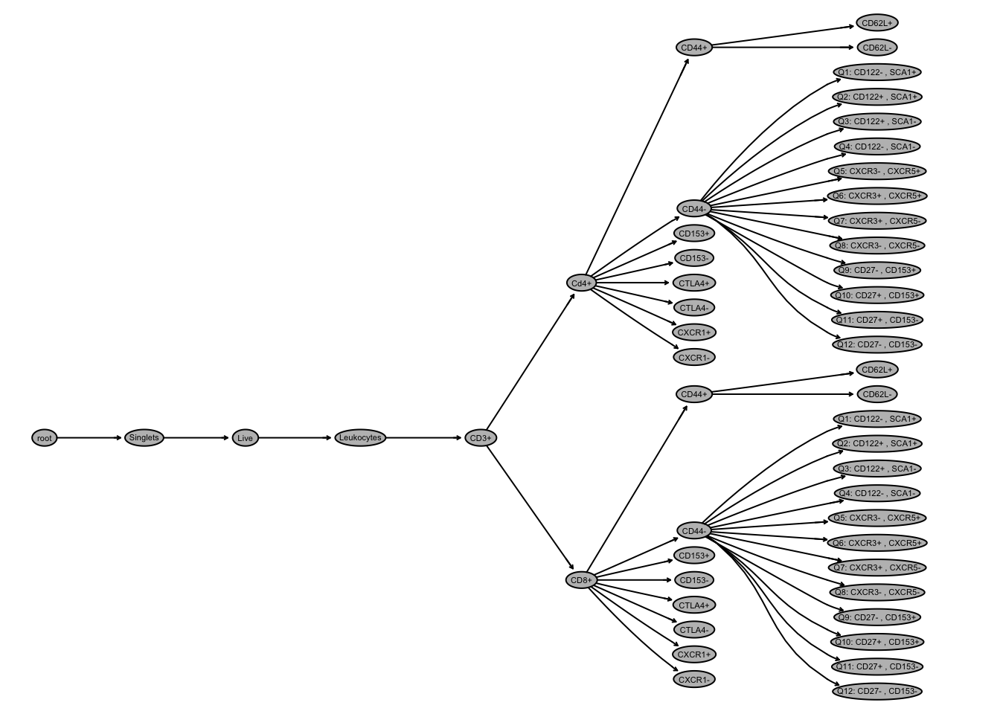
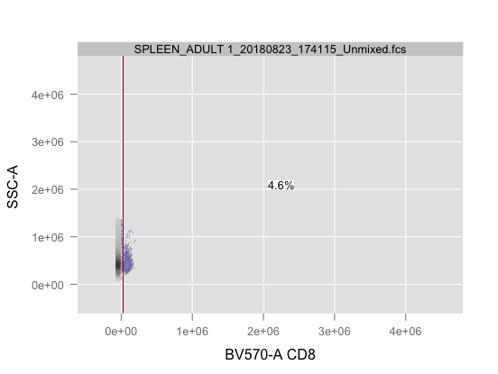
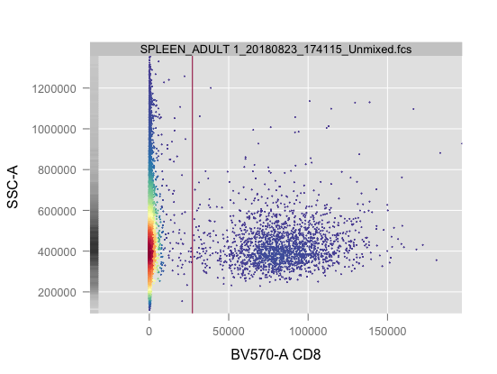
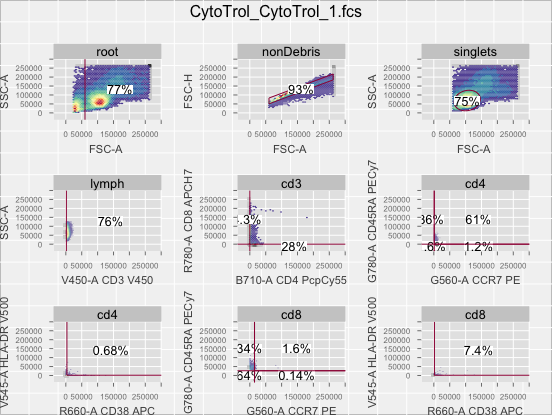
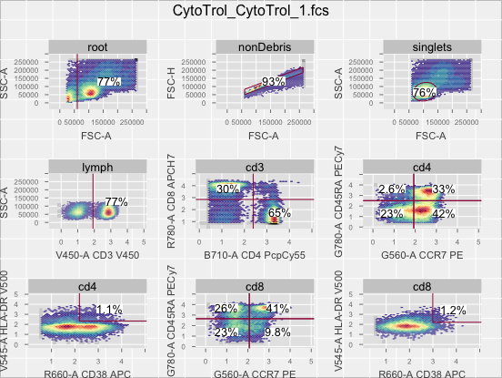

Chapter 6 Customization
It is possible that additional customization may be necessary when working with the openCyto framework. Below are three common customizations that will be outlined in this chapter.
- Hiding unwanted nodes
- Renaming nodes
- Adjusting plots
6.1 Hiding unwanted nodes
When automating analysis, there may be nodes that were not predefined in the .csv gating template or nodes that may not be of interest in your particular analysis. Plotting the gating hierarchy using the plot() function will display this and then nodes can be hidden based on need with the following code. Below is an example of a “full” gating hierarchy and then the same hierarchy with the CD3+ node removed.
Full Hierarchy
plot(gh)
CD3+ Removed Hierarchy
To remove nodes, first save the unwanted nodes as an R object named nodesToHide. Next, use the code following the lapply() function, only replacing gs with your GatingSet object name.
nodesToHide <- "CD3+"
lapply(nodesToHide, function(thisNode)setNode(gh, thisNode, FALSE))## [[1]]
## NULL6.2 Renaming nodes
Rename nodes based on your preferences with the following code. Within the setNode function, the first input is the current cell population name and the second is the desired change.
setNode("Live", "Viable")
plot(gh)6.3 Adjusting plots
6.3.1 Adjust plot axes
As seen in chapter 2, it may be necessary to adjust the plot axes in order to best view the gates. This is done using the code below. Setting xlim and ylim to “data” adjusts plot based on the actual data range, rather than instrument specifications. Custom ranges can also be input numerically.
flowWorkspace.par.set("plotGate", list(xlim = "data",
ylim = "data"))Here is a comparison of xlim and ylim set as “instrument” and then “data”.
Instrument

Data

6.3.2 Transform data for better visualization
Although data will not be altered in any way, transformation may allow for better visualization. The most common form of transformation for flow cytometry analysis is biexponential. Below is a comparison of gates without transformation and gates that have been transformed.
Without Transformation

Transformed
